Declarative specs as an agent-native interface for maps
Javier de la Torre CARTO Founder
jatorre.github.io/deckgl-ai-ready · slides, experiments, raw model outputs, harnesses
Premise
Everyone in this room builds with agents now. So do deck.gl's users.
Treat agents as deck.gl's newest user group and audit how ready we are for them. Five questions, each with evidence and a suggestion.
What do models recommend when someone asks for a map?
How well do frontier models write deck.gl?
How can agents drive deck.gl interactively? the thesis
Does our website and documentation work for AI?
How do we handle AI contributions?
Q1 · What do models recommend?
10 models, 8 neutral prompts, no tools, no docs
Ask
What models picked
2 million GPS points, colored by speed
deck.gl 7/10 · GPT-5.2 and GPT-5-mini solved it with MapLibre vector tiles
Simple airports GeoJSON with a tooltip
Leaflet 7/10 · both newest frontier models chose MapLibre
H3 hexagons colored by count
deck.gl 7/10
Best open-source map library for React in 2026
MapLibre 8/10 · deck.gl never primary, named as runner-up
Single HTML file with five city markers
Leaflet 10/10
"A light basemap"
CARTO Positron 9/10, unprompted
Claude Haiku 4.5 · Sonnet 5 · Opus 5 · Fable 5.1 · GPT-4o · GPT-5-mini · GPT-5.2 · GPT-5.6-sol · Gemini 3.7 Flash · Gemini 3.1 Pro. One sample each; directional. Full tables in the repo.
Q1 · What do models recommend?
How current is what they know?
3/10
write deck.gl v8 when asked for the latest
0/10
know 9.2, 9.3 or 9.4 (latest: 9.4.0, 5 Sept)
Asked to add deck.gl on MapLibre:
6/10 correct pre-9.4 answer, every one pausing to say "despite the name"
1/10 knew the three-day-old @deck.gl/maplibre module
3/10 wrong attach call or an invented class
The rename tells the story
Models needed a paragraph to explain why a module named mapbox works with MapLibre. Two of them guessed the package name developers expected. Last Friday deck.gl 9.4 shipped exactly that package. The confusion was real enough to rename the module; every model's training data still says the old name.
Suggestion. deck.gl is the "when the data is big" library in model priors. That matches its identity; own it. Keep the on-ramp from MapLibre short, because that is where agents begin. And accept that without documentation an agent can read at run time, it will write deck.gl one to two years old.
Q2 · How well do frontier models write deck.gl?
Four maps, one shot, no tools, rendered and scored
T1 World airports as typed points, tooltip, legend, over MapLibre
T2 Skew-aware choropleth of 4,627 Vancouver blocks with a classed legend
T3 Extruded hexagons of 140k UK accident points with a radius slider
T4 Animated taxi trips with play/pause and a time readout
Self-contained HTML, CDN only, real data from deck.gl-data, fixed viewports. Models: Claude Fable 5.1, GPT-5.6-sol, Gemini 3.8 Flash, Gemini 3.1 Pro, GLM 5.3.
Harness
Headless Chromium with WebGL. Page errors, failed requests and CDN versions captured; screenshots at 3, 8 and 14 s.
17-point rubric applied by Claude Fable 5.1 as judge over code, render report and screenshots: renders 2 · spec compliance 5 · cartography 5 · interactivity 3 · API currency 2.
Q2 · How well do frontier models write deck.gl?
Fable 5.1
GPT-5.6-sol
Gemini 3.8 Flash
Gemini 3.1 Pro
airports
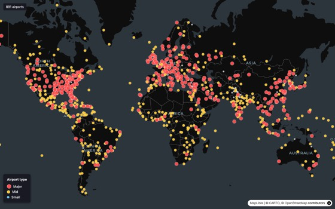
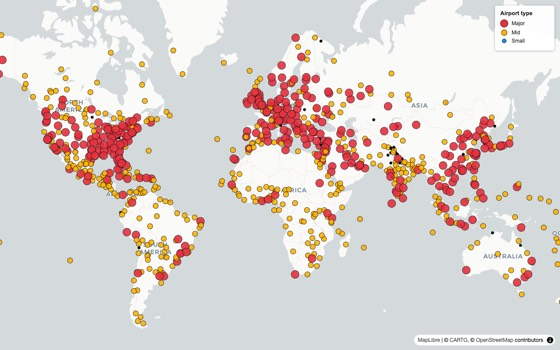
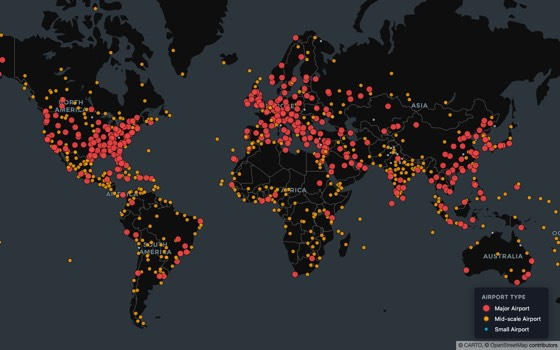
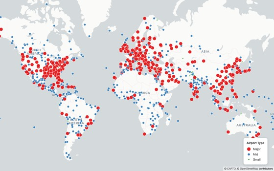
choropleth
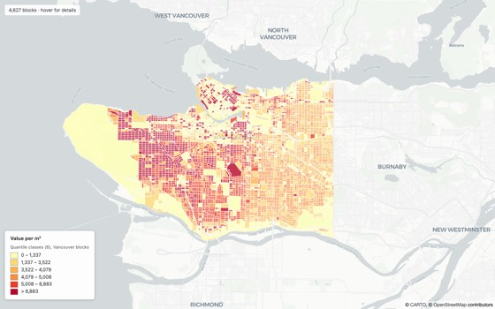
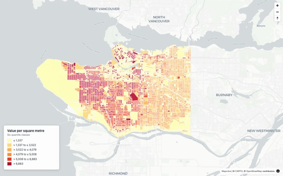
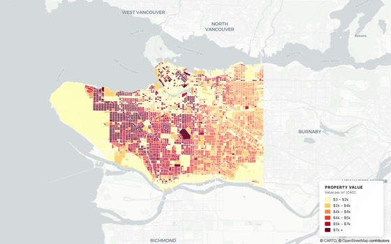
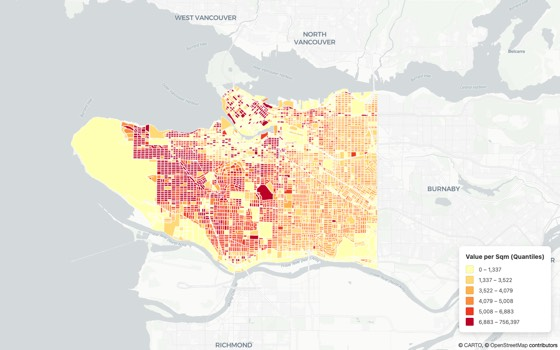
hexagons
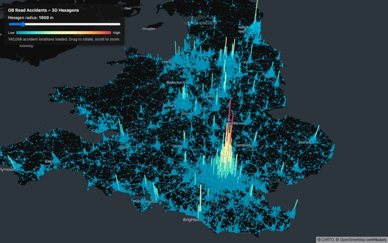
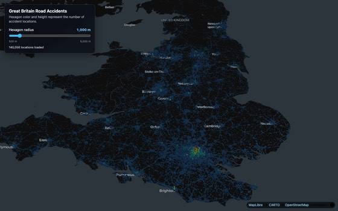
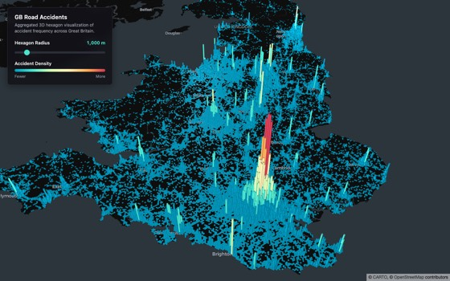
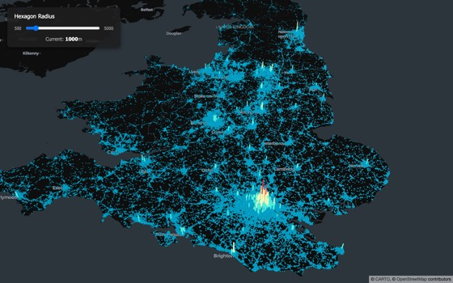
trips
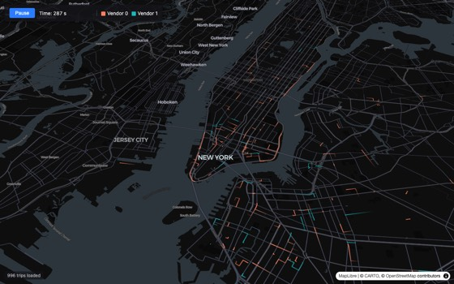
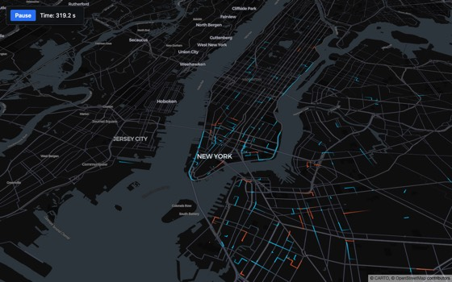
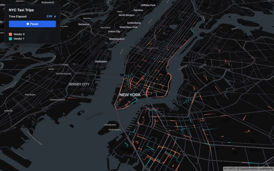
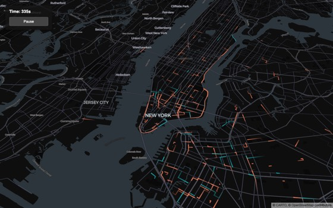
60/68
61/68
57/68
58/68
16 of 16 maps rendered the intended data. Zero page errors, zero console errors, zero HTTP errors. Every explicit requirement met in 14 of 16. Live maps and judge notes: the report.
Live. Claude Fable 5.1, task 4, exactly as generated: TripsLayer over MapLibre, trail length 180 s, 60-second loop, play/pause, time readout. 32 seconds to generate.
Q2 · How well do frontier models write deck.gl?
The catch is in the code, not the picture
Model
Total
Renders
API currency
deck.gl pinned from the CDN
Basemap integration
GPT-5.6-sol
61/68
4/4
7/8
9.1.x ×3, 8.9.36
MapboxOverlay + addControl, every task
Claude Fable 5.1
60/68
4/4
6/8
9.0.x ×2, 8.9.35 ×2
v8 standalone DeckGL + mapStyle
Gemini 3.1 Pro
58/68
4/4
4/8
8.9.x ×4
v8 standalone + window.mapboxgl = maplibregl
Gemini 3.8 Flash
57/68
4/4
4/8
8.9.35 ×4
v8 standalone DeckGL + mapStyle
GLM 5.3 open weights
32/68
1/4
4/8
8.9.x ×4
shadowed the deck global; mutated layer props
15 of 20 files pin a deck.gl 8.9.x bundle. None use 9.2+. None use the new MapLibre module.
The hexagon and trips tasks pulled models to v8 hardest: they are the canonical showcase examples, and the model copies the example's stack with its idea.
Cartography 3 to 4 of 5 everywhere, never 5: YlOrRd quantiles every time, long-tail skew unhandled, tiny points, missing legends.
GLM knows the vocabulary but not the contract: layers are immutable and replaced, not mutated.
Q3 · How can agents drive deck.gl interactively?
This was designed in 2018
"Especially in the infovis space, there is a growing need to be able to generate powerful visualizations directly from the backend. Being able to describe a visualization in abstract terms and send it to the front-end for display without having knowledge about how to code front-end applications can be valuable."RFC: JSON Layers · Ib Green · July 2018
console.error('Back-channel not implemented for this transport') The return path was designed in 2018 and never built.
Q3 · How can agents drive deck.gl interactively?
Three ways an agent holds a map (we run all three)
State behind verbs
A document the agent writes
A picture it receives
Where
In-app map assistant
MCP tool rendering a @deck.gl/json spec inside the chat (MCP Apps)
CLI screenshot
Agent writes
One tool call per turn, ~27 verbs, ordering rules in prose
The whole spec, stateless, portable
Nothing; it names a saved map
Agent reads
A lossy summary of the map
Nothing. Errors only, passively
Pixels
Validity contract
Prose: "always add layer right after source", "one tool call per turn"
A closed registry of layers + prose + counting layers before and after conversion
fetch succeeds
Lesson. Verbs are stateful but every rule lives in prose and gets written twice. A document is portable, and a stateless spec inside an MCP App means the map itself becomes an artifact that travels from chat into apps. Neither gives the agent eyes.
Q3 · How can agents drive deck.gl interactively?
The cost of valid deck.gl JSON today
36 KB
the tool description an agent must read, about 9,000 tokens
Half of it is a catalogue of silent failures: unregistered layer → empty map, no error. Wrong layer/source pairing → empty. Missing aggregation → empty. Deep ternary → blank tile.
Charts vs maps, same service
Vega-Lite charts: validated with Ajv against the official 1.9 MB JSON Schema, errors formatted for the model. deck.gl specs: count the layers before and after conversion.
"Error detection is currently limited and error messages may not be very helpful."deck.gl docs, @deck.gl/json overview
Errors only, passive. Actively messaging the model about a failure over an optimistic tool result made it oscillate and retry the same arguments. Silence equals success.
Error text is a prompt. Name the legal alternatives, forbid blind retry.
The loop is write-only. No viewport, feature counts or clicks come back. The agent cannot look at its own map.
Q3 · How can agents drive deck.gl interactively?
Can models write the spec? 10 models, one choropleth
Outcome
Models
Valid data-driven accessor (@@= ternary)
4/10
CARTO's colorContinuous helper in a stock spec
2/10
Mapbox style-spec expressions or invented classes
4/10
Would fail loudly in today's converter
0/10
@@type syntax was fine in 7 of 10. The failure is semantic: data-driven styling. Models reach for the Mapbox expression grammar, the declarative map styling language the training data is full of.
GPT-5.2, GPT-5-mini and GPT-4o, in a deck.gl spec.
Q3 · How can agents drive deck.gl interactively?
Everyone is rebuilding the same thing
CARTO
Stock @deck.gl/json, closed registry, credential injection, a coercer for host quirks, a 36 KB contract, an errors-only back-channel.
SQLRooms
Keeps @deck.gl/json canonical, adds a dataset-binding block, GeoArrow layers, and ~60 KB of AI normalizer, validator and instructions whose rules mirror ours line for line.
And
pydeck · kepler.gl config · noodles.gl's portable project JSON · three vocabularies for "a color scale over an attribute" · models default to a fourth.
Meanwhile step 1 of the v2 tracker, Zod schemas for GeoJSON, has been an open pull request since 17 April. The tracker's comments already ask for the right things: layers passed separately from data, a schema catalog, a split between the visualization spec and data-source declarations.
Q3 · Proposal
Make @deck.gl/json v2 the agent interface
JSON Schema from Zod, including the compatibility rules: layer↔source, required props, expression grammar. Validation, structured outputs, editors.
Loud failure. A conversion report (ok · partial · error, dropped items with reasons) instead of warn-and-drop.
State read-back. Viewport, layers with ids and counts, picked object, optional screenshot. Finish the 2018 back-channel. Ship a reference MCP App.
Patch semantics for multi-turn editing: JSON Patch, or deep-merge by layer id.
A data-source concept for SQL, tiles, Arrow and COG, so vendors stop wrapping their own.
Registry profiles. Core plus vendor registries, published with their schemas.
Two provocations
Accept Mapbox-style expression arrays as an accessor syntax. Models and humans already speak it.
Standardize one scale-helper vocabulary in core.
A tension to name
The 2018 RFC's "One API" principle vs an agent profile that is smaller and stricter. We broke One API on purpose with a closed registry. Make that a supported pattern.
Q4 · Does our website and documentation work for AI?
Where our neighbours are
Site
llms.txt
Agent skills
MCP server
luma.gl same TSC
yes, 97 KB
—
—
maplibre.org
yes
official maplibre-agent-skills, 9 skills, "to inform the LLMs"
community
docs.mapbox.com
yes
—
two official: location, and a DevKit for coding agents
deck.gl
404
none
none
Measured consequence. 15 of 20 generated maps on v8. 0 of 10 models know a release from the last sixteen months. 6 of 10 explain a module rename that already happened.
Suggestions
llms.txt and page-level Markdown; luma.gl already has the pipeline
An official deck.gl-agent-skills: MapLibre on 9.4, v8→v9 migration, binary attributes at scale, the JSON spec, the aggregation layers' unwritten rules
A machine-readable what's-new
Q5 · How do we handle AI contributions?
The contributions are already here. The policy is not.
deck.gl's contributing guide, PR template, and every TSC document (charter, governance, developer process): zero mentions of AI or assisted contributions.
Endpoint makes reasoning mandatory. Default: 24,000 tokens of thinking, no HTML, ~400 s per task. Low effort: 40,000 tokens on 3 of 4 tasks, ~600 s. One finished map pinned deck.gl@8.10.1, which does not exist. Only an explicit 8,000-token reasoning cap produced four files, in 10 to 33 s.